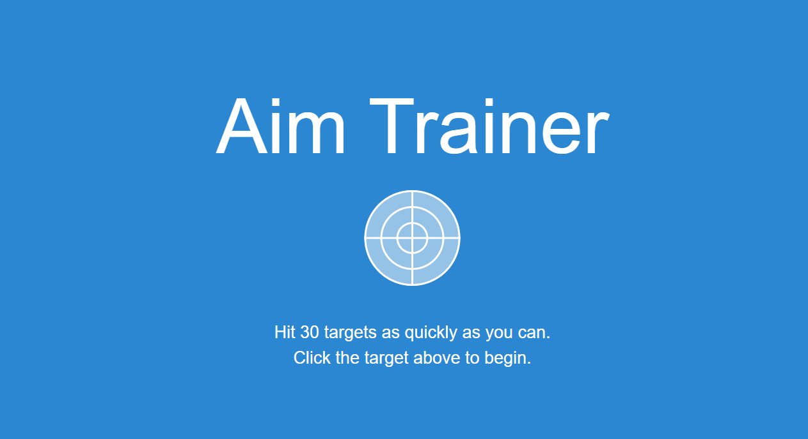

Aim Trainer
Measure reaction speed and pointer accuracy using DOM manipulation and coordinate math.
1. Problem Statement
Create a browser-based Aim Trainer where a circular target spawns at random positions inside a fixed-size playing arena. Each time the player clicks the target, it immediately relocates to a new valid position until 20 targets are hit.
2. Reference Example
Your game should work similarly to the Human Benchmark Aim Trainer ↗: click targets in sequence, track remaining targets, and show the average time per target (in ms) at the end.

web/01_aim-trainer/assets/reference.png
3. Functional Requirements
0 / 7 completedCheck off requirements as you implement them (saved automatically in your browser).
4. Constraints & Rules
- Use vanilla HTML, CSS, and JavaScript only.
- No external libraries, frameworks, or canvas game engines.
- Strict No-AI Policy: Do not use ChatGPT, Gemini, Claude, or Copilot. Use Google Search and official documentation only.
5. Bonus Challenges
- Track missed clicks (clicks inside the arena that miss the target) and calculate an Accuracy %.
- Add difficulty presets that change target diameter (e.g., Small
25px, Medium40px, Large60px). - Persist the player's fastest average reaction time using
localStorage.
6. Allowed Research & Search Queries
Stuck? Click any search query below to copy it and look it up on Google or MDN: